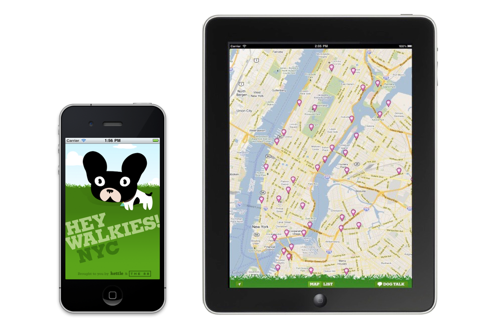
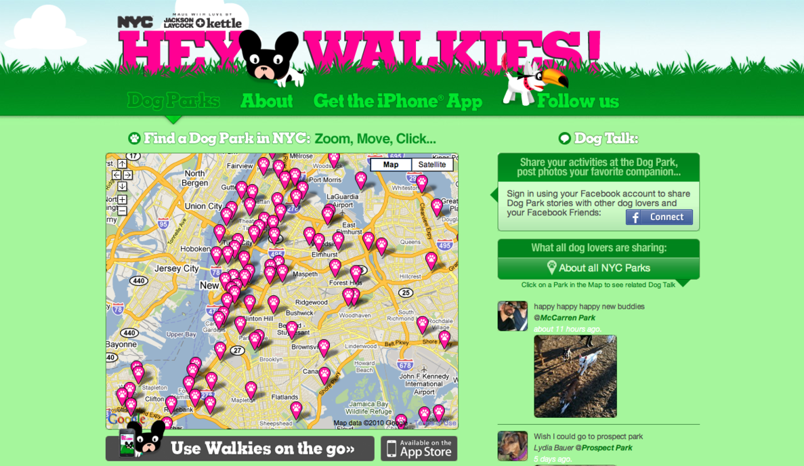

Hey Walkies
Never miss out on all the doggy action by finding all of NYC's dog parks laid out on our iOS and desktop maps. Your favorite park is only a pinch and zoom away. Looking for photos of cute dogs? There is an app for that! Use Hey Walkies to upload and browse all the best in show of your local dog park.
Make no bones about it, New Yorkers love their dogs. You'd be hard pressed to walk a block without bumping into a Frenchie, Jack Russell or Labrador hotfooting it to the local doggy park. And it's not just the pups that are loving their doggy park experience. Dog owners throughout NY are connecting with other owners and creating a community, meeting people, friends, lovers - all through the shared experience of letting their dogs run wild.
While dog owners may know the whereabouts of dog parks in their own neighborhoods, as of yet there is not a resource for locating dog parks around the city. Hey Walkies helps owners find parks for their dogs to play in wherever they may be in NYC. Hey Walkies also taps into Facebook, bringing the world's largest social network to the people and pups that use our site.
Apple loves Hey Walkies so much that they decided to feature it in their "Dog Lovers" TV commercial.
- 
- 